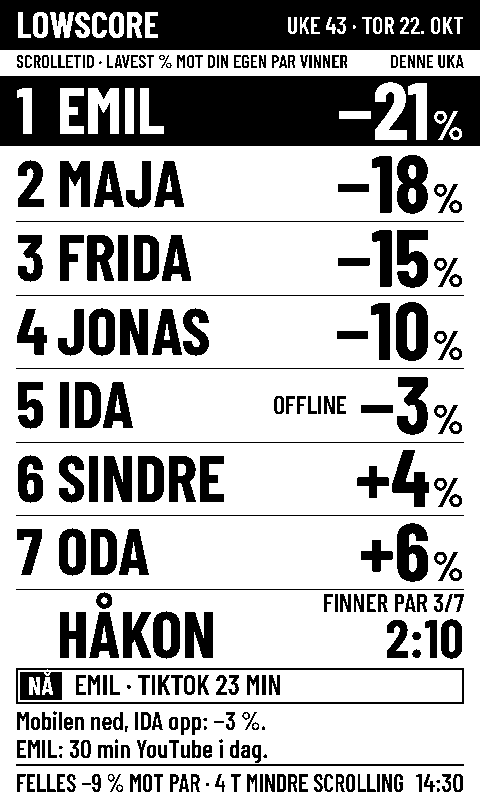

Hvem i kollektivet scroller minst?
Lowscore er en resultattavle for kjøkkenet. Mobilene sender scrolletiden av seg selv, og den som kutter mest mot sin egen normal, vinner uka.
Den første sesongen er gratis. Ingen app på iPhone, ingen konto.
- 1EMIL−21%
- 2MAJA−18%
- 3FRIDA−15%
- 4JONAS−10%
- 5SINDRE+4%
- 6ODA+6%
JONAS er 10 % under par denne uka.
SINDRE: Twitch × 3 kokte egg.
Slik virker det
Lag tavla
Gi kollektivet et navn. Du får en lenke til tavla og en QR-kode som de andre skanner.
Koble til mobilene
På iPhone sier en snarvei fra når Instagram, TikTok og de andre åpnes og lukkes. På Android gjør en liten app det. Fem minutter, én gang per mobil.
Finn paren
Den første uka måler tavla hvor mye hver av dere vanligvis scroller. Det blir paren din.
Lavest prosent vinner
Hver uke rangeres alle etter hvor langt under eller over sin egen par de ligger. Mandag kåres ukas vinner.
Du konkurrerer mot deg selv
Den som scroller mest fra før, er ikke sjanseløs. Tavla teller prosent mot din egen par, ikke minutter.
| Spiller | Paren | Denne uka | Resultat |
|---|---|---|---|
| SIRI | 2:40 | 2:13 | −17 % |
| OLA | 2:13 | 1:58 | −11 % |
En dag mobilen ikke sier fra, teller som par pluss 20 %. Hver uke teller den verste dagen over par bare som par, så én lang togtur ødelegger ikke uka. Alle reglene
Hva tavla ser, og hva den aldri ser
Tavla ser
- Minuttene dine per dag i appene kollektivet har valgt. Som standard Instagram, TikTok, YouTube, Snapchat, Facebook, X, Reddit og Twitch.
- Bare hvis du slår på roast-modus: minutter per app, og hvilken av dem du er i akkurat nå. Du velger selv, og den er av til du slår den på.
Tavla ser aldri
- Meldinger, hva du ser på, bilder, nettsider, kontakter eller hvor du er.
- Andre apper, eller hvor lenge mobilen er i bruk totalt.
Gå ut av spillet når du vil, så slettes alt om deg med en gang. Dataene ligger i en database i Stockholm, og vi selger ingenting til noen. Personvernerklæringen
Tavla kan henge på to måter
Et gammelt nettbrett eller en gammel mobil
Åpne lenken til tavla, legg den på hjemskjermen og la den stå i lader. Den oppdateres hvert minutt. Gratis, og klar i dag.
E-papirtavla
En e-papirskjerm som går på batteri, henger på kjøleskapet med magneter og oppdateres hvert kvarter. Fem kollektiv i Bergen får låne en i piloten i januar.
Har du allerede en TRMNL? Den kan vise tavla nå.

Hva det koster
Den første sesongen er gratis. Etter det koster et flatpass 149 kr for et halvt år, for hele kollektivet.
Den første sesongen er kalibreringsuka og fire uker med konkurranse. Er dere fem, blir flatpasset under 5 kroner i måneden per person.
Passet fornyes ikke av seg selv. Når det går ut, sier tavla fra, og den som satte den opp, kan kjøpe et nytt. Angrer du innen 14 dager, får du alle pengene tilbake.
Piloten i Bergen
I januar 2027 låner fem kollektiv i Bergen hver sin e-papirtavle i fire uker, gratis. Vi kommer og setter den opp, og henter den igjen etterpå. Alle i kollektivet må ha lyst til å være med.
Meld på kollektivetSpørsmål
Må alle i kollektivet være med?
Nei. Bare de som blir med, står på tavla. To er nok til å starte.
Trenger jeg en app?
På iPhone nei: du bruker Snarveier, som allerede er på telefonen. På Android installerer du en liten app fra lenken du får når du blir med.
Kan de andre se hva jeg gjør på mobilen?
Nei. Tavla får bare minutter i appene på lista. Med roast-modus av viser den bare summen din, ikke hvilke apper minuttene kom fra.
Blokkerer Lowscore apper?
Nei. Lowscore teller bare. Resten er opp til dere.
Hva skjer når gratissesongen er over?
Tavla fortsetter å vise stillingen, men de to morolinjene nederst blir byttet ut med en påminnelse om flatpasset. Den som satte opp tavla, kjøper det på innstillingssiden.
Hvem står bak?
Vebjørn, en student i Bergen. Mye av arbeidet, fra koden til disse tekstene, er gjort av Claude, en KI fra Anthropic, mens Vebjørn har bestemt, testet og bygget. Det er en del av poenget: vi viser åpent hvor langt det går. Slik ble Lowscore laget.
Klar for uke én?
Lag tavla nå. Den første sesongen er gratis.